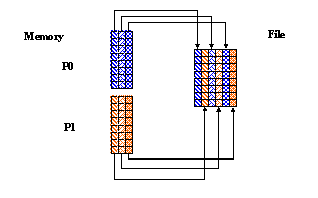

|
HDF5
1.15.0.f39b228
API Reference
|


|
|
HDF5
1.15.0.f39b228
API Reference
|
|
Navigate back: Main / Getting Started with HDF5 / A Brief Introduction to Parallel HDF5
In this case, each process writes data from a contiguous buffer into disconnected locations in the file, using a regular pattern.
In C it is done by selecting a hyperslab in a file that consists of regularly spaced columns. In F90, it is done by selecting a hyperslab in a file that consists of regularly spaced rows.
| Figure a C Example | Figure b Fortran Example |
|---|---|

| 
|
In this example, you have two processes that write to the same dataset, each writing to every other column in the dataset. For each process the hyperslab in the file is set up as follows:
The stride is 2 for dimension 1 to indicate that every other position along this dimension will be written to. A stride of 1 indicates that every position along a dimension will be written to.
For two processes, the mpi_rank will be either 0 or 1. Therefore:
The block size allows each process to write a column of data to every other position in the dataset.

|
Below is an example program for writing hyperslabs by column in Parallel HDF5:
| hyperslab_by_col.c |
The following is the output from h5dump for the HDF5 file created by this example:
In this example, you have two processes that write to the same dataset, each writing to every other row in the dataset. For each process the hyperslab in the file is set up as follows:
You would define the size of the hyperslab to write to the dataset as follows:
The stride is 2 for dimension 1 to indicate that every other position along this dimension will be written to. A stride of 1 indicates that every position along a dimension will be written to.
For two process, the mpi_rank will be either 0 or 1. Therefore:
The block size allows each process to write a row of data to every other position in the dataset, rather than just a point of data.
The following shows the data written by Process 1 to the file:

|
Below is the example program for writing hyperslabs by column in Parallel HDF5:
| hyperslab_by_row.F90 |
The output for h5dump on the file created by this program will look like the output as shown above for the C example. This is because h5dump is written in C. The data would be displayed in rows if it were printed using Fortran 90 code.
Navigate back: Main / Getting Started with HDF5 / A Brief Introduction to Parallel HDF5
 1.9.1
1.9.1